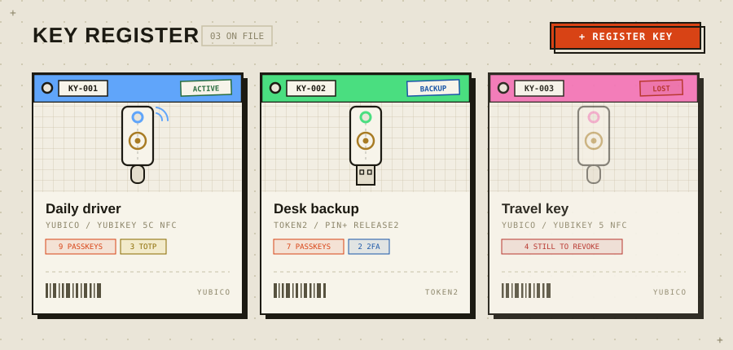

Self-hosted · Docker · Zero build
Know what lives
on every key.
You bought a YubiKey. Then two Token2 keys. Now nobody on earth knows which key holds the GitHub passkey. Keeyo is a small, private register for your hardware security keys — every physical key gets a tag, and every tag lists exactly what's on it.

What it does
Asset-tag register
Every key is a tag: number, color strip, status stamp (active / backup / lost / retired), schematic artwork or your own photo, and a per-key logbook of everything that ever happened to it.
Scan to identify
Plug a key in, touch it, and Keeyo reads its model fingerprint from the live FIDO registry — or tells you exactly which of your registered keys it is. Several keys plugged in at once? The one you touch answers.
Backup warnings
See every service from the key's side or every key from the service's side. Services relying on a single key get flagged — and the warning is a button that registers a backup in two clicks.
Lost-key checklist
Mark a key lost and Keeyo turns its registrations into a revocation checklist, nagging the dashboard until every service that still trusts the key has been cleaned up.
Tap-to-reveal notes
Store a key's PIN as a secret note that is only revealed after physically tapping that exact key — challenge–response, verified server-side. A stolen session alone can't read it.
Protects itself, too
Enroll sign-in security keys and Keeyo requires password and key tap to log in. Print physical asset tags with barcode + QR, export CSV, install it as a PWA.
Quick start
docker run -d --name keeyo \
-p 5390:5390 \
-v keeyo-data:/data \
--restart unless-stopped \
ghcr.io/ans-ib/keeyo:latestOpen http://localhost:5390, create the admin account, register your first key. Full options — Docker Compose, bare Node, reverse proxy, every environment variable — are on the install page.
Why self-hosted
An inventory of your security keys is a map of your most important accounts. It shouldn't live in someone else's cloud. Keeyo is a single tiny container — Node.js, Express and SQLite, one npm dependency, no build step — and its only outbound request is the FIDO device-registry refresh, which you can turn off with one variable.